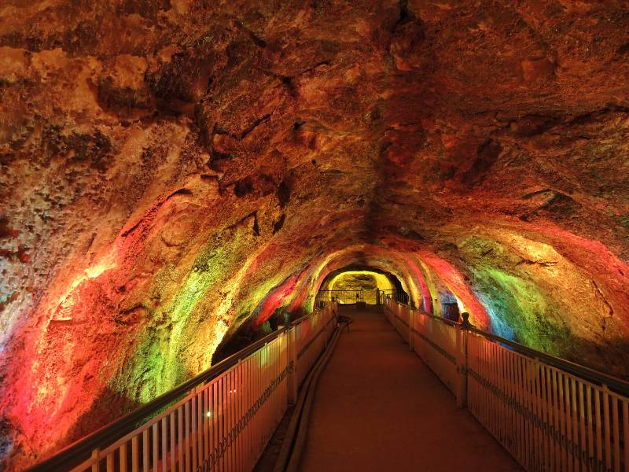

The Khewra Salt Mine (or Mayo Salt Mine) is in Khewra, north of Pind Dadan Khan, an
administrative subdivision of Jhelum District, Punjab Region, Pakistan. The mine is
in the Salt Range, Potohar plateau, which rises from the Indo-Gangetic Plain, and is
the second largest in the world.
The mine is famous for its production of pink Khewra salt, often marketed as
Himalayan salt, and is a major tourist attraction, drawing up to 250,000 visitors a
year. Its history dates back to its discovery by Alexander's troops in 320 BC,
but it started trading in the Mughal era. The main tunnel at ground level was
developed by Dr. H. Warth, a mining engineer, in 1872 during British rule. After
independence, the BMR took possession until 1956 and then PIDC owned the mines till
1965. After India-Pakistan war in 1965, the WPIDC took over the administration of
salt mines and in 1974, the Pakistan Mineral Development Corporation took over the
mine, which still remains the largest source of salt in the country, producing more
than 350,000 tons per annum of about 99% pure halite. Estimates of the
reserves of salt in the mine vary from 82 million tons to 600 million tons.
History
The Khewra Salt Mine is also known as Mayo Salt Mine, in honour of Lord Mayo, who
visited it as Viceroy of India. The salt reserves at Khewra were discovered when
Alexander the Great crossed the Jhelum and Mianwali region during his Indian
campaign. The mine was discovered, however, not by Alexander, nor by his allies, but
by his army's horses, when they were found licking the stones. Ailing horses of
his army also recovered after licking the rock salt stones. During the Mughal
era the salt was traded in various markets, as far away as Central Asia. On the
downfall of the Mughal empire, the mine was taken over by Sikhs. Hari Singh Nalwa,
the Sikh Commander-in-Chief, shared the management of the Salt Range with Gulab
Singh, the Raja of Jammu. The former controlled the Warcha mine, while the latter
held Khewra. The salt quarried during Sikh rule was both eaten and used as a source
of revenue.

Inside of Khewra Mines
In 1872, some time after they had taken over the Sikhs' territory, the British
developed the mine further. They found the mining to have been inefficient,
with irregular and narrow tunnels and entrances that made the movement of
labourers difficult and dangerous. The supply of water inside the mine was poor,
and there was no storage facility for the mined salt. The only road to the mine
was over difficult, rocky terrain. To address these problems the government
levelled the road, built warehouses, provided a water supply, improved the
entrances and tunnels, and introduced a better mechanism for excavation of salt.
Penalties were introduced to control salt smuggling.
Location
Khewra Salt Mine is in Pind Dadan Khan Tehsil of Jhelum District. About 160 km (100
miles) from Islamabad and Lahore, it is accessed via the M-2 motorway, about 30
kilometres (20 miles) off the Lilla interchange while going towards Pind Dadan Khan
on the Lilla road. The mine is in mountains that are part of a salt range, a
mineral-rich mountain system extending about 200 km from the Jhelum river south of
Pothohar Plateau to where the Jhelum river joins the Indus river. Khewra
mine is about 288 meters (945 feet) above sea level and about 730 meters (2400
feet) into the mountain from the mine entrance. The underground mine covers an area
of 110 km2 (43 sq. miles).
Tourism
Khewra Salt Mine is a major tourist attraction, with around 250,000 visitors a
year, earning it considerable revenue. Visitors are taken into the mine on
the Khewra Salt Mines Railway. There are numerous pools of salty water inside.
The Badshahi Masjid was built in the mining tunnels with multi-coloured salt
bricks about fifty years ago. Other artistic carvings in the mine include
a replica of Minar-e-Pakistan, a statue of Allama Iqbal, an accumulation of crystals
that form the name of Muhammad in Urdu script, a model of the Great Wall of China
and another of the Mall Road of Murree. In 2003 two phases of development of
tourist facilities and attractions were carried out, at a total cost of 9 million
rupees. A clinical ward with 20 beds was established in 2007, costing 10 million
rupees, for the treatment of asthma and other respiratory diseases using salt
therapy. The "Visit Pakistan Year 2007" event included a train safari visit of
Khewra Salt Mine. In February 2011 Pakistan Railways started operating special
trains for tourists from Lahore and Rawalpindi to Khewra. For this purpose the
railway station of Khewra was refurbished with the help of a private firm.
Other visitor attractions in the mine include the 75-meter-high (245-foot-high)
Assembly Hall; Pul-Saraat, a salt bridge with no pillars over a 25-meter-deep
(80-foot-deep) brine pond; Sheesh Mahal (Palace of Mirrors), where salt crystals are
light pink; and a café.